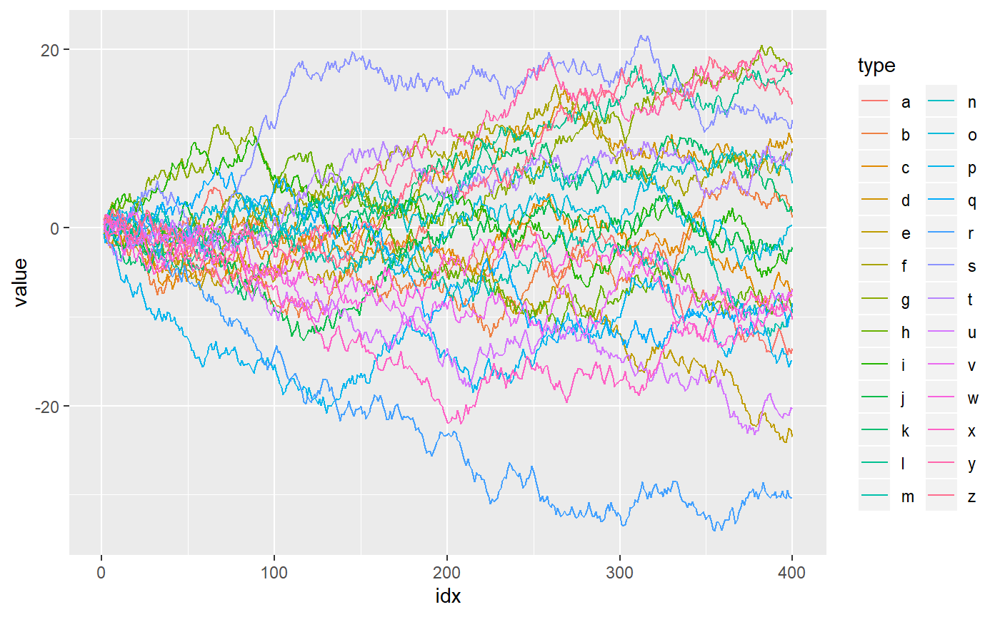
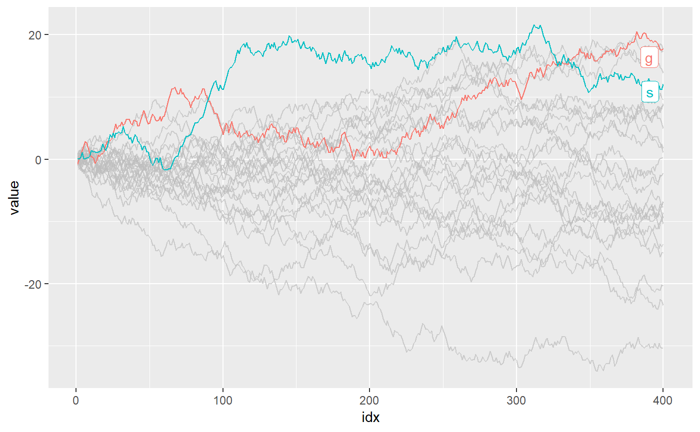

Highlight geoms in ggplot2.
Installation
install.packages("gghighlight")
# Or the development version from GitHub:
# install.packages("devtools")
devtools::install_github("yutannihilation/gghighlight")Example
Suppose we have a data that has so many series that it is hard to identify them by their colours as the differences are so subtle.
library(ggplot2)
ggplot(d) +
geom_line(aes(idx, value, colour = type))
With gghighlight(), we can highlight the lines whose max values are larger than 20:
library(gghighlight)
p <- ggplot(d) +
geom_line(aes(idx, value, colour = type)) +
gghighlight(max(value) > 19)
#> label_key: type
p
The result is an usual ggplot object, so it is fully customizable. For example, it can be used with custom themes and facets.
p + theme_minimal()
p + theme_minimal() + facet_wrap(~ type)
gghighlight() can highlight almost any geoms. For more details, please read Introduction to gghighlight.